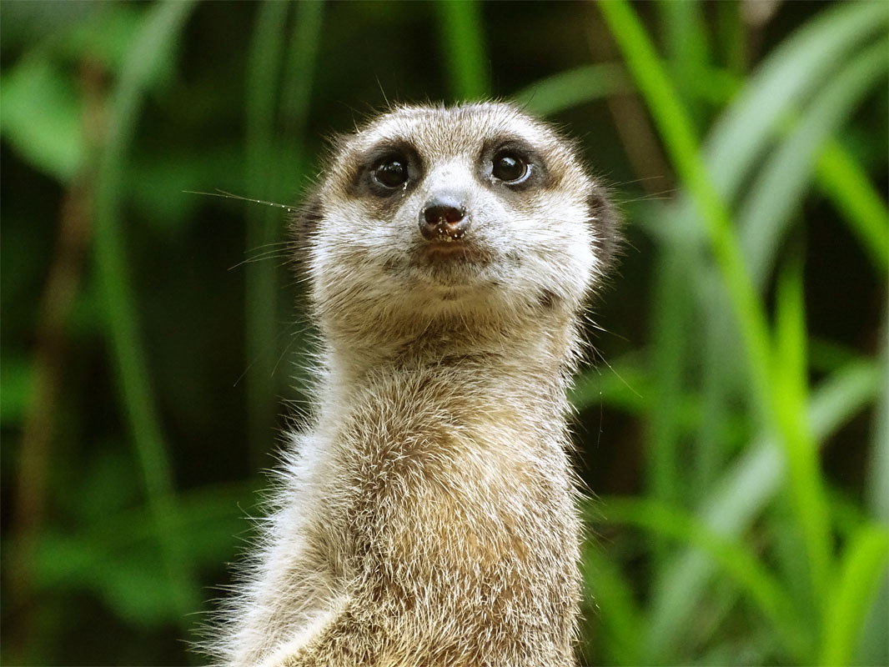

Kluču rotēšana!
Ar "transform: rotate(20deg)" pārveidojumu ir iespējams kādu no objektiem pagriezt par noteiktu grādu skaitu!
Izmēģini uz bildes zemāk:
https://www.w3schools.com/css/css3_2dtransforms.asp
Spoguļskats!
Ar "-webkit-box-reflect: left 10px;" ir iespējams izveidot bildes spoguļskatu augšā, apakšā vai sānos, kā arī kādā noteiktā attālumā.
Izmēģini uz bildes zemāk:
https://www.w3schools.com/css/css3_image_reflection.asp
Pārejas!
Ar pārejām "transition: width 2s, height 2s, transform 2s" ir iespējams izmainīt kādu objekta parametru plūstoši, kā animāciju. Šajā gadījumā bildes izmērs un pagrieziens mainās tad,
kad ar pelīti tai uzbrauc virsū, kā arī animācijas ilgums ir 2s. Jaunos parametrus norāda pie stila ar ":hover" atlasi.
Izmēģini zemāk:

https://www.w3schools.com/css/css3_transitions.asp